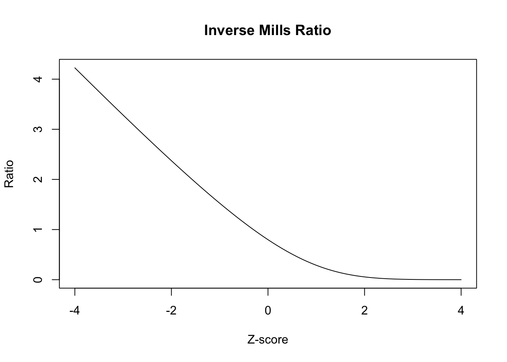

Missing data lecture 12: MNAR missingness
Non-ignorable missingness
The past few lectures have assumed that we have had ignorable missingness, so that inferences under: \[ L_\text{full}(\theta, \phi \mid \tilde{m}, \tilde{y}_{(0)}) \propto \int_{\mathcal{Y}_{(1)}} f_Y(Y_{(0)} = \tilde{y}_{(0)}, Y_{(1)} = y_{(1)}\mid \theta) P(M = \tilde{m} \mid Y_{(0)} = \tilde{y}_{(0)}, Y_{(1)} = y_{(1)}, \phi) dy_{(1)} \] were equivalent to inferences under \[ L_\text{ign}(\theta \mid \tilde{y}_{(0)}) \propto \int_{\mathcal{Y}_{(1)}} f_Y(Y_{(0)} = \tilde{y}_{(0)},Y_{(1)} = y_{(1)} \mid \theta) dy_{(1)} \] This was true as long as \(\theta\) and \(\phi\) were variationally independent, and that our missingness process was MAR: \[ P(M = \tilde{m} \mid Y_{(0)} = \tilde{y}_{(0)}, Y_{(1)} = y_{(1)}, \phi) = P(M = \tilde{m} \mid Y_{(0)} = \tilde{y}_{(0)}, Y_{(1)} = y_{(1)}^\star, \phi) \]
for any two \(y_{(1)}, y_{(1)}^\star\) for all \(\phi\).
If instead we have MNAR missingness: \[ P(M = \tilde{m} \mid Y_{(0)} = \tilde{y}_{(0)}, Y_{(1)} = y_{(1)}, \phi) \neq P(M = \tilde{m} \mid Y_{(0)} = \tilde{y}_{(0)}, Y_{(1)} = y_{(1)}^\star, \phi) \] for some \(y_{(1)}, y_{(1)}^\star\) such that \(y_{(1)} \neq y_{(1)}^\star\) and some \(\phi\), the inferences won’t be the same.
MAR is often a very strong assumption. For example, suppose we are running a survey that includes the question: ``How many cigarettes have you smoked in the last month?” Given the social attitudes around smoking, it might not be reasonable to assume that \(P(M = 1 \mid y_i = 100, \phi) = P(M = 1 \mid y_i = 0, \phi)\).
Unfortunately, for us there are problems when our data are MNAR. For all but several special classes of models, we won’t be able to identify the parameters of the missingness mechanism. That means that no matter how many observations we have we will never be able to learn some subset of the \(\phi\) parameters with any certainty. This stands in contrast to most of the models we are used to working with. Formally, identifiability of a parametric model is defined as in Rothenberg (1971):
Definition 1 (Global identifiability) Let \(\theta \in \Theta\) be a parameter indexing a parametric density function \(f(y \mid \theta)\). \(\theta\) is identifiable if there does not exist a parameter value \(\theta^\prime \in \Theta, \theta^\prime \neq \theta\) for which the density \(f(y \mid \theta) = f(y \mid \theta^\prime)\) for all observations \(y\).
A simple example of nonidentifiability is the following model: \[ y_i \overset{\text{iid}}{\sim} \text{Normal}(\mu + \eta, \sigma^2) \] Any pair \((\mu, \eta)\) and \((\mu^\prime, \eta^\prime)\) such that \(c = \mu + \eta = \mu^\prime + \eta^\prime\) will lead to the same observational density. In this problem we would say that \(\mu\) and \(\eta\) are nonidentifable or unidentifiable.
In our case, if our data are independent and \(y_i\) is one-dimensional, we can identify \(P(M_i = 0 \mid y_i, \phi)\), but not \(P(M_i = 1 \mid y_i, \phi)\), except in special cases, which we’ll talk about later.
Approaches to modeling MNAR data: Pattern-mixture and selection models
Because we can’t separate inference on \(\theta\) from the missingness process, we’ll need to use a joint model for \(Y, M\). That entails some decomposition of \(P(M = m, Y_{(0)} = y_{(0)}, Y_{(1)} = y_{(1)} \mid \theta, \phi)\).
The most straightforward decomposition is the one we used above, which is called a selection model: \[ f_Y(Y_{(0)} = y_{(0)}, Y_{(1)} = y_{(1)} \mid \theta)P(M = m \mid Y_{(0)} = y_{(0)}, Y_{(1)} = y_{(1)} \phi) \] For now, we will assume that our units are independent conditional on a fully-observed covariate that varies with unit, so we’ll focus on \[ \begin{aligned} &f_Y(Y_{(0)} = y_{(0)}, Y_{(1)} = y_{(1)} \mid X = x, \theta)P(M = m \mid Y_{(0)} = y_{(0)}, Y_{(1)} = y_{(1)}, X = x, \phi) = \\ & \prod_{i} f_Y(Y_{i(0)} = y_{i(0)}, Y_{i(1)} = y_{i(1)} \mid X_i = x_i, \theta)P(M = m_i \mid Y_{i(0)} = y_{i(0)}, Y_{i(1)} = y_{i(1)}, X_i = x_i, \phi) \end{aligned} \] A different decomposition is called the pattern-mixture model: \[ f_Y(Y_{(0)} = y_{(0)}, Y_{(1)} = y_{(1)} \mid M = m, \xi)P(M = m \mid \omega) \] which, under an independence assumption, with a covariate \(x_i\) paired with each observation simplifies: \[ \begin{aligned} & f_Y(Y_{(0)} = y_{(0)}, Y_{(1)} = y_{(1)} \mid M = m, X = x, \xi) P(M = m \mid X = x, \omega) = \\ & \prod_{i} f_Y(Y_{i(0)} = y_{i(0)}, Y_{i(1)} = y_{i(1)} \mid M_i = m_i, X_i = x_i, \xi) P(M_i = m_i \mid X_i = x_i, \omega) \end{aligned} \]
Example: Univariate nonresponse
Continuing with our example above, let’s suppose that in addition answers to the how many cigarettes in the past month question, we have age data for each respondent, as well as state of residence. Let \(y_{i1}\) represent age of respondent \(i\), and let \(y_{i2}\) be how many cigarettes individual \(i\) smoked in the past month, and let \(x_i\) be state of residence for each respondent. Suppose that we have arranged our data such that respondents \(i = 1, \dots, r\) have complete data, whereas for \(i = r+1, \dots, n\), respondents are missing \(y_{i2}\).
The pattern mixture likelihood for this dataset would take the form: \[ \begin{aligned} f_Y(M = m, Y_{(0)} = y_{(0)}, Y_{(1)} = y_{(1)} \mid X = x, \xi) = \prod_{i=1}^r & f_Y(y_{i1}, y_{i2} \mid m_i = 0,x_i, \xi)P(m_i=0 \mid x_i, \omega) \\ &\times \prod_{i=r+1}^n f_Y(y_{i1} \mid m_i = 1,x_i,\xi)P(m_i=1 \mid x_i, \omega) \end{aligned} \] Under MAR, we have that \[ f_Y(y_{i2} \mid y_{i1}, m_i = 1,x_i,\xi) = f_Y(y_{i2} \mid y_{i1}, m_i = 0,x_i,\xi) \] which identifies the joint distribution of \(y_{i1},y_{i2}\) for nonrespondents. For MNAR, the distribution \(f_Y(y_{i2} \mid y_{i1}, m_i = 1,x_i,\xi)\) is that which is unknown.
The selection model approach to this is
\[ \begin{aligned} f_Y(M = m, Y_{(0)} = y_{(0)}, & Y_{(1)} = y_{(1)} \mid X = x, \xi) = \\ & \prod_{i=1}^r f_Y(y_{i1}, y_{i2} \mid x_i, \theta)P(m_i=0 \mid y_{i1}, y_{i2}, x_i, \phi) \\ & \times \prod_{i=r+1}^n f_Y(y_{i1} \mid x_i,\theta) \int_{\mathcal{Y}} f_Y(y_{i2} \mid y_{i1}, x_i,\theta) P(m_i=1 \mid y_{i1}, y_{i2}, x_i, \phi) dy_{i2} \end{aligned} \] You can see the appeal of pattern-mixture models from the two formulations: The pattern mixture model doesn’t involve integrals of the missingness mechanism against an unknown density, and it is clear where the information is missing, namely
Identified selection models
Heckman selection model
If we’re willing to assume a specific distribution for \((y_{i2}, m_i) \mid y_{i1}\), we can have identifiability of selection models. One choice is the following latent variable model, where \(m_i = \ind{z_i \leq 0}\): \[ \begin{aligned} y_{i2} & = x_i^T \beta + \alpha y_{i1} + \sigma \epsilon_{i1} \\ z_{i} & = x_i^T \gamma + \phi_1 y_{i1} + \epsilon_{i2} \\ (\epsilon_{i1}, \epsilon_{i2}) & \sim \text{Normal}(0, \Sigma) \end{aligned} \] where \[ \Sigma = \begin{bmatrix} \sigma^2 & \rho \sigma \\ \rho \sigma & 1 \end{bmatrix} \] \[ \begin{aligned} (y_{i2}, z_i) & \sim \text{Normal}(x_i^T \beta + \alpha y_{i1}, x_i^T \gamma + \phi_1 y_{i1}, \Sigma) \end{aligned} \] If \(\rho \neq 0\), \(m_i \not\indy y_{i2} \mid y_{i1}\). To see why: \[ z_i \mid y_{i2} \sim \text{Normal}(x_i^T \gamma + \phi_1 y_{i1} + \frac{\rho}{\sigma} (y_{i2} - (x_i^T \beta + \alpha y_{i1})), 1 - \rho^2) \]
This means that the likelihood for someone with \(m_i = 0\) is: \[ f(y_{i1} \mid x_i, \theta) \text{Normal}(y_{i2} \mid x_i^T \beta + \alpha y_{i1}, \sigma^2)\Phi\left(\frac{x_i^T \gamma + \phi_1 y_{i1} + \frac{\rho}{\sigma} (y_{i2} - (x_i^T \beta + \alpha y_{i1}))}{\sqrt{1 - \rho^2}}\right) \] Then the likelihood for someone with missing observations of \(y_{i2}\) is: \[ f_Y(y_{i1} \mid x_i, \theta) (1 - \Phi\left(x_i^T \gamma + \phi_1 y_{i1}\right)) \]
The conditional formulation makes it clear that this model is equivalent to the following model:
\[ \begin{aligned} y_{i2} & \sim \text{Normal}(x_i^T \beta + \alpha y_{i1}, \sigma^2) \\ P(m_i=1 \mid y_{i2}) & = \Phi(x_i^T \gamma^\prime + \phi_1^\prime y_{i1} + \phi_2 y_{i2}) \end{aligned} \]
Selection models with exclusion restrictions
We know that the following model: \[ \begin{aligned} y_{i1} & \sim \text{Normal}(x_i^T \beta, \sigma^2) \\ P(m_i=1 \mid y_{i1}) & = \Phi(x_i^T \gamma + \phi_2 y_{i1}) \end{aligned} \]
is identified only by the implied joint normality of the errors in the equivalent model:
\[ \begin{aligned} y_{i1} & = x_i^T \beta + \sigma \epsilon_{i1} \\ z_{i} & = x_i^T \gamma^\prime + \epsilon_{i2} \\ (\epsilon_{i1}, \epsilon_{i2}) & \sim \text{Normal}\left(0, \begin{bmatrix} 1 & \rho\\ \rho & 1 \end{bmatrix}\right)\\ m_i & = \ind{z_i > 0} \end{aligned} \]
Why is this the case that identification follows from the normality assumption?
The standard procedure for estimating these models is via a two step procedure:
Fit a probit model to the missingness indicators to learn \(\gamma^\prime\).
Fit a linear regression model for \(y_{i1}\) on \(x_i\) and the conditional expectation of \(z_i \mid z_i < 0\), which we get from the probit model.
Let’s look at the conditional expectation of \(y_{i1} \mid z_i\) given \(z_i < 0\). We know the conditional expectation of \(y_{i1} \mid z_i = z\): \[ x_i^T \beta + \rho \sigma (z_i - x_i^T \gamma^\prime) \] What is the conditional expectation of \(z \mid z < 0\)? This is called the inverse Mills ratio: \[ \Exp{z \mid z < 0} = x_i^T \gamma^\prime - \frac{\phi(-x_i^T \gamma^\prime)}{\Phi(-x_i^T \gamma^\prime)} \] Plugging this in above gives: \[ x_i^T \beta - \rho \sigma \frac{\phi(-x_i^T \gamma^\prime)}{\Phi(-x_i^T \gamma^\prime)} \]
Thus, this is design matrix for the model we would fit to the units in which \(y_{i1}\) is observed: \[ \begin{bmatrix} x_1^T & \phi(-x_1^T \hat{\gamma}^\prime)/\Phi(-x_1^T \hat{\gamma}^\prime) \\ x_2^T & \phi(-x_2^T \hat{\gamma}^\prime)/\Phi(-x_2^T \hat{\gamma}^\prime) \\ \vdots & \vdots \\ x_n^T & \phi(-x_n^T \hat{\gamma}^\prime)/\Phi(-x_n^T \hat{\gamma}^\prime) \\ \end{bmatrix} \]
To the extent that the function \(\phi(\cdot)/\Phi(\cdot)\), which is called the inverse Mills ratio, is linear in its arguments, this extra term in the regression will be collinear with \(x_i^T \beta\) and the parameter \(\rho\) won’t be well-identified. Let’s plot the function to see what it looks like:
Thus, the regression for \(y_{i1}\) on \(x_i\) and the Inverse Mills Ratio in the selected units is identified solely by the shape of the Inverse Mills ratio.
If we can write the model instead like: \[ \begin{aligned} y_{i1} & \sim \text{Normal}(x_i^T \beta, \sigma^2) \\ P(m_i=1 \mid y_{i1}) & = \Phi(x_i^T \gamma + w_i^T \psi + \phi_2 y_{i1}), \end{aligned} \] the point estimates for \(\beta\) are more robust to deviations from the normality assumption. The reason for this is from above: we have another source of variation in the inverse Mills ratio, so the term won’t be collinear with the predictors in the \(y_{i1} \mid z_i\) regression.
Here’s an example from our textbook where the study design makes it possible to exclude the \(w_i\) from the model for \(y_{i1}\).
Example 1 (Estimating HIV incidence via household surveys) Janssens et al. (2014) analyzes data from a survey designed to infer population level incidence of HIV in Namibia. In this study, the researchers estimated population-level HIV incidence by sending a nurse to randomly selected households, and interviewing the household participants about demographic information, attitudes towards HIV and prevention. The nurse also would take a saliva sample to assess HIV status. As with any survey, there were respondents who declined to give a saliva sample, and there was concern that propensity to refuse to give a sample is related to HIV status. Crucially, the study design randomly assigned nurses to households. The model the researchers would like to fit is the following: \[ \begin{aligned} P(y_{i1} = 1) & = \Phi(x_i^T \beta, \sigma^2) \\ P(m_i=1 \mid y_{i1}) & = \Phi(x_i^T \gamma + w_i^T \psi + \phi_2 y_{i1}), \end{aligned} \] where \(x_i\) are sociodemographic variables, while \(w_i\) is vector of dummy variables corresponding to nurse ID. Because nurses were randomly assigned, it is plausible that nurse ID does not affect HIV status, but could impact the probability of refusing to give a sample.
The model can be formulated as a latent bivariate normal model: \[ \begin{aligned} z_{i1} & = x_i^T \beta + \epsilon_{i1} \\ z_{i2} & = x_i^T \gamma^\prime + w_i^T \psi^\prime + \epsilon_{i2} \\ (\epsilon_{i1}, \epsilon_{i2}) & \sim \text{Normal}\left(0, \begin{bmatrix} 1 & \rho\\ \rho & 1 \end{bmatrix}\right) \\ y_{i1} & = \ind{z_{i1} \geq 0}, \\ m_{i} & = \ind{z_{i2} \geq 0} \end{aligned} \] If \(\psi \neq 0\), the model is robust to deviations from the joint latent normality assumption. The plausibility of the
The probability of each outcome is as follows, where we let \(\mu_i^Y = x_i^T \beta\) and \(\mu_i^M = x_i^T \gamma^\prime + w_i^T \psi^\prime\): \[ \begin{aligned} P(y_{i1} = 0, m_i = 0) & = P(\mu_i^Y + \epsilon_{i1} < 0, \mu_i^M + \epsilon_{i2} < 0) \\ P(y_{i1} = 1, m_i = 0) & = P(\mu_i^Y + \epsilon_{i1} \geq 0, \mu_i^M + \epsilon_{i2} < 0) \\ P(y_{i1} = 0, m_i = 1) & = P(\mu_i^Y + \epsilon_{i1} < 0, \mu_i^M + \epsilon_{i2} \geq 0) \\ P(y_{i1} = 1, m_i = 1) & = P(\mu_i^Y + \epsilon_{i1} \geq 0, \mu_i^M + \epsilon_{i2} \geq 0) \end{aligned} \] This expression can be written in terms of the bivariate normal CDF: \(\Phi(a, b, \rho)\), which equals \(P(\mathcal{Z}_1 \leq a, \mathcal{Z}_2 \leq b)\), where \(\mathcal{Z}_1, \mathcal{Z}_2\) are bivariate normal with mean zero, standard deviations \(1\), and correlation \(\rho\): \[ \begin{aligned} P(y_{i1} = 0, m_i = 0) & = P(\mu_i^Y + \epsilon_{i1} < 0, \mu_i^M + \epsilon_{i2} < 0) \\ & = P(\epsilon_{i1} < -\mu_i^Y, \epsilon_{i2} < -\mu_i^M) \\ & = \Phi(-\mu_i^Y, -\mu_i^M, \rho) \end{aligned} \] Also note that if \(\mathcal{Z}_1, \mathcal{Z}_2\) are bivariate normal with correlation \(\rho\), then \((-\mathcal{Z}_1, \mathcal{Z}_2)\) are bivariate normal with correlation \(-\rho\). Then \[ \begin{aligned} P(y_{i1} = 1, m_i = 0) & = P(\mu_i^Y + \epsilon_{i1} \geq 0, \mu_i^M + \epsilon_{i2} < 0) \\ & = P(\epsilon_{i1} > -\mu_i^Y, \epsilon_{i2} < -\mu_i^M) \\ & = P(-\epsilon_{i1} < \mu_i^Y, \epsilon_{i2} < -\mu_i^M) \\ & = \Phi(\mu_i^Y, -\mu_i^M, -\rho) \end{aligned} \] All of these events are written \[ \begin{aligned} P(y_{i1} = 0, m_i = 0) & = \Phi(-\mu_i^Y, -\mu_i^M, \rho) \\ P(y_{i1} = 1, m_i = 0) & = \Phi(\mu_i^Y, -\mu_i^M, -\rho) \\ P(y_{i1} = 0, m_i = 1) & = \Phi(-\mu_i^Y, \mu_i^M, -\rho) \\ P(y_{i1} = 1, m_i = 1) & = \Phi(\mu_i^Y, \mu_i^M, \rho) \end{aligned} \] This model is called the bivariate probit model, and you will fit this model in Stan for the next HW to a similar dataset.
The researchers found that incidence estimates for differet subgroups could be impacted by refusal bias, so it was necessary to perform this adjustment.
Further investigations of identifiablity and Tukey’s selection model
Wainer (1986) presents Holland’s commentary on selection models and Tukey’s proposed alternative selection model. Let \(Y_{i}\) be the measurement of interest, and let \(M_i\) be the missingness indicator. The selection model factorizes the joint distribution for \(P(Y_i = y, M_i = m \mid \theta, \phi)\) as \(P(Y_i = y \mid \theta) P(M_i = m \mid Y_i = y, \phi)\), while the pattern-mixture model factorizes the joint as \(P(M_i = m \mid \phi) P(Y_i = y \mid M_i = m, \theta)\). We can express the selection model in terms of the pattern mixture model: \[ P(M_i = m \mid Y_i = y, \phi) = \frac{P(M_i = m \mid \phi)P(Y_i = y \mid M_i = m, \theta)}{P(Y_i = y \mid M_i = 0, \theta)P(M_i = 0 \mid \phi) + P(Y_i = y \mid M_i = 1, \theta)P(M_i = 1 \mid \phi)} \] Then we can write the odds of missingness, or \(P(M_i = 1 \mid Y_i = y, \phi)/P(M_i = 0 \mid Y_i = y, \phi)\) as: \[ \frac{P(M_i = 1 \mid Y_i = y, \phi)}{P(M_i = 0 \mid Y_i = y, \phi)} = \frac{P(M_i = 1 \mid \phi)P(Y_i = y \mid M_i = 1, \theta)}{P(M_i = 0 \mid \phi)P(Y_i = y \mid M_i = 0, \theta)} \tag{1}\] In log-odds form we get:
\[ \begin{aligned} \log\lp\frac{P(M_i = 1 \mid Y_i = y, \phi)}{P(M_i = 0 \mid Y_i = y, \phi)}\rp & = \log\lp\frac{P(M_i = 1 \mid \phi)}{P(M_i = 0 \mid \phi)}\rp \\ & \quad + \log\lp P(Y_i = y \mid M_i = 1, \theta)\rp \\ & \quad - \log\lp P(Y_i = y \mid M_i = 0, \theta)\rp \end{aligned} \] Holland argues that the uncertainty in the LHS is driven mainly by the unidentifiable term \(\log\lp P(Y_i = y \mid M_i = 1, \theta)\rp\) on the RHS, which is unidentifiable. Instead, he advocates for Tukey’s idea which stems from rearranging Equation 1:
\[ P(Y_i = y \mid M_i = 1, \theta) = \frac{P(M_i = 0 \mid \phi)}{P(M_i = 1 \mid \phi)}\frac{P(M_i = 1 \mid Y_i = y, \phi)}{P(M_i = 0 \mid Y_i = y, \phi)}P(Y_i = y \mid M_i = 0, \theta) \] This is the so called simplified selection model; on the RHS the selection odds is unidentified so it allows for a principled approach to sensitivity analysis. For instance, we can parameterize the odds of selection given \(y\) as an exponential function of \(y\).
\[ P(Y_i = y \mid M_i = 1, \theta) = \frac{P(M_i = 0 \mid \phi)}{P(M_i = 1 \mid \phi)}e^{\beta y}P(Y_i = y \mid M_i = 0, \theta) \]
The resulting marginal distribution for \(Y_i\) is: \[ P(Y_i = y \mid \theta) = (1 + e^{\beta y})P(M_i = 0 \mid \phi) P(Y_i = y \mid M_i = 0, \theta) \] One can investigate how \(P(Y_i = y \mid \theta)\) changes with respect to different \(\beta\) values.
There is another bivariate normal model that is identified by exclusion restrictions.
Example 2 (Bivariate Pattern mixture model) Imagine we’re running a household survey on income, so we can observe the address at which someone lives, but we might not learn household income due to refusals.
Let \(Y_{i1}\) be the log-household value, which we obtain from Zillow, or from property tax assessments, and \(Y_{i2}\) be the log of the response to a question about household income on a survey. Let \(M_i = 1\) when \(Y_{i2}\) is missing and \(0\) when it is observed. Let \(i = 1, \dots, r\) be the cases for which we have observed log-income, and let \(i = r+1, \dots, n\) be the observations that are missing log-income. We assume that we have log-houshold value for all survey respondents.
We can use the pattern-mixture model for this scenario: \[ \begin{aligned} L(\mu, \Sigma \mid Y_{(0)} = \tilde{y}_{(0)}, M = \tilde{m}) & = \prod_{i=1}^r (1 - \omega)\text{N}(y_{i1}, y_{i1} \mid, m_i = 0, \mu_0, \Sigma_0) \\ & \times \prod_{i=r+1}^n \omega\text{N}(y_{i1} \mid m_i = 1, \mu_1, \sigma^2_1) \end{aligned} \] We’ll suppose that the missingness mechanism has the following form: \[ P(M_i = 1 \mid Y_{i1} = y_{i1}, Y_{i1} = y_{i2}) = P(M_i = 1 \mid Y_{i1} = y_{i2}). \] We would like to learn the following marginal expection for \(y_{i2}\): \[ \Exp{Y_{i2}} = \Exp{Y_{i2} \mid M_i = 0} (1 - \omega) + \Exp{Y_{i2} \mid M_i = 1} \omega \] where we can’t calculate \(\Exp{Y_{i2} \mid M_i = 1}\) directly. However, we can use the fact that the missingness mechanism does not depend on \(y_{i1}\) to identify our model.
\[ \begin{aligned} f_Y(y_{i1} = y \mid Y_{i2} = y_{i2}, M_i = m) & = \frac{f_Y(y_{i1} = y \mid Y_{i2} = y_{i2}) P(M_i = m \mid y_{i1} = y, Y_{i2} = y_{i2})}{P(M_i = m \mid Y_{i2} = y_{i2})} \\ & = \frac{f_Y(y_{i1} = y \mid Y_{i2} = y_{i2}) P(M_i = m \mid Y_{i2} = y_{i2})}{P(M_i = m \mid Y_{i2} = y_{i2})} \\ & = f_Y(y_{i1} = y \mid Y_{i2} = y_{i2}) \end{aligned} \] This means that the following holds: \[ f_Y(y_{i1} = y \mid Y_{i2} = y_{i2}, M_i = 1) = f_Y(y_{i1} = y \mid Y_{i2} = y_{i2}, M_i = 0) \] This means that we can infer the joint distribution of \(Y_{i2}, Y_{i1}\) for \(M_i = 1\) if the joint normality assumption holds. It comes from the following observation. Let \(\beta_{10\cdot 2}^{(0)}\) \(\beta_{12\cdot 2}^{(0)}\) be the intercept and slope from the regression of \(y_{i1}\) on \(y_{i2}\) in the complete units. \[ \mu_1^{(0)} = \beta_{10\cdot 2}^{(0)} + \beta_{12\cdot 2}^{(0)}\mu_2^{(0)} \] Using the assumption that \(\beta_{10\cdot 2}^{(1)} = \beta_{10\cdot 2}^{(0)}\) \(\beta_{12\cdot 2}^{(1)} = \beta_{12\cdot 2}^{(0)}\) gives us the following relationship: \[ \mu_1^{(1)} = \beta_{10\cdot 2}^{(0)} + \beta_{12\cdot 2}^{(0)}\mu_2^{(1)} \] Then we can solve for \(\mu_2^{(1)}\): \[ \mu_2^{(1)} = \frac{\mu_1^{(1)} - \beta_{10\cdot 2}^{(0)}}{\beta_{12\cdot 2}^{(0)}} \] We observe \(\mu_1^{(1)}\), and have an MLE of \(\bar{y}_1^{(1)}\) and the MLEs for \[ \hat{\beta}_{10\cdot 2}^{(0)} = \bar{y}_1^{(0)} - \frac{s_{12}}{s_{22}}\bar{y}_2^{(0)}, \hat{\beta}_{12\cdot 2}^{(0)} = \frac{s_{12}}{s_{22}} \] Thus we get the following MLE for the mean for \(y_{i2}\) in the missing units: \[ \hat{\mu}_2^{(1)} = \bar{y}_2^{(0)} + \frac{\bar{y}_{1}^{(1)} - \bar{y}_{1}^{(0)}}{\frac{s_{12}}{s_{22}}} \]
Example 3 (Sensitivity analysis for pattern-mixture models) Continuing from above
We’ll suppose that we can construct a variable \(Y_{i2}^\star = Y_{i1} + \lambda Y_{i2}\), and that missingness depends only on \(Y_{i2}^\star\): We’ll suppose that the missingness mechanism has the following form: \[ P(M_i = 1 \mid Y_{i1} = y_{i1}, Y^\star_{i2} = y^\star_{i2}, \phi) = P(M_i = 1 \mid Y_{i2}^\star = y^\star_{i2}, \phi). \] We would like to learn the following marginal expection for \(y_{i2}\): \[ \Exp{Y_{i2}} = \Exp{Y_{i2} \mid M_i = 0} (1 - \omega) + \Exp{Y_{i2} \mid M_i = 1} \omega \] where we can’t calculate \(\Exp{Y_{i2} \mid M_i = 1}\) directly. However, we can use the fact that the missingness mechanism does not depend on \(y_{i1}\) to identify our model.
\[ \begin{aligned} f_Y(y_{i1} = y \mid Y^\star_{i2} = y^\star_{i2}, M_i = m) & = \frac{f_Y(y_{i1} = y \mid Y^\star_{i2} = y^\star_{i2}) P(M_i = m \mid y_{i1} = y, Y^\star_{i2} = y^\star_{i2})}{P(M_i = m \mid Y^\star_{i2} = y^\star_{i2})} \\ & = \frac{f_Y(y_{i1} = y \mid Y^\star_{i2} = y^\star_{i2}) P(M_i = m \mid Y^\star_{i2} = y^\star_{i2})}{P(M_i = m \mid Y^\star_{i2} = y^\star_{i2})} \\ & = f_Y(y_{i1} = y \mid Y^\star_{i2} = y^\star_{i2}) \end{aligned} \] This means that the following holds: \[ f_Y(y_{i1} = y \mid Y^\star_{i2} = y^\star_{i2}, M_i = 1) = f_Y(y_{i1} = y \mid Y^\star_{i2} = y^\star_{i2}, M_i = 0) \] This means that we can infer the joint distribution of \(Y_{i2}, Y_{i1}\) for \(M_i = 1\) if the joint normality assumption holds. Some more algebra akin to Example 2 leads to an expression of \(\mu_2^{(0)}\): \[ (\hat{\mu}_2)^{(1)} = \bar{y}_2^{(0)} + \frac{\lambda s_{22} + s_{12}}{\lambda s_{12} + s_{11}}(\bar{y}_{1}^{(1)} - \bar{y}_{1}^{(0)}) \]
References
Janssens, Wendy, Jacques van der Gaag, Tobias F Rinke de Wit, and Zlata Tanović. 2014. “Refusal Bias in the Estimation of HIV Prevalence.” Demography 51 (3): 1131–57.
Rothenberg, Thomas J. 1971. “Identification in Parametric Models.” Econometrica 39 (3): 577–91. https://doi.org/10.2307/1913267.
Wainer, Howard. 1986. Drawing Inferences from Self-Selected Samples. New York, NY: Springer New York.